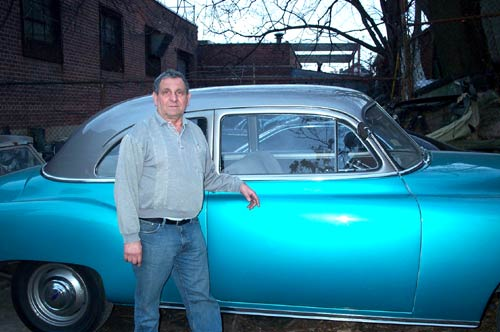

Mr. Auto Trim has been owned and operated by Henry since 1983. Originally opened and operated in Chicopee, Massachusetts, Henry brought Mr. Auto Trim to the Carnarsie neighborhood of Brooklyn in 1988. Henry has over 30 years experience working with auto glass, auto upholstery and auto electrical systems. In addition to that, Henry worked for many years repairing and installing storefront gates and glass. That means that where your car is concerned, Henry can address the issue and complete the repair the way it is supposed to be done. Whether you have a late model car or a classic automobile like Henry himself (click here for photos of Henry's car interior), Mr. Auto Trim is the one-stop shop for all of your auto glass, auto upholstery, and electrical system repairs and upgrades. In addition, Mr. Auto Trim has access to a wide range of automotive products, often at a large discount. Whether you want a new spoiler, an auto car starter, or a sunroof, Henry can usually have your product in less than a week, and can schedule you ahead of time for installation at your convenience.
1316 Utica Avenue
(between Foster & Avenue D)
Brooklyn, NY
(718) 451-1963
Fax: (718) 451-2592
(between Foster & Avenue D)
Brooklyn, NY
(718) 451-1963
Fax: (718) 451-2592
